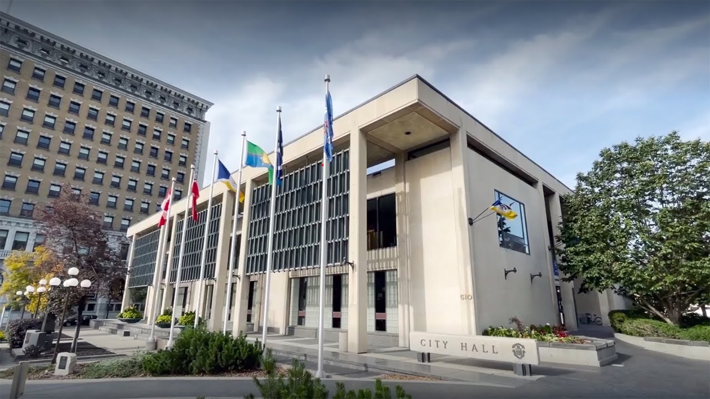

Winnipeg New Music Festival 2027: Late January, Tickets

Once a year the Winnipeg Symphony Orchestra gives a whole week to music written in our own lifetimes, a good deal of it in the last few years, some of it never performed anywhere before. That is the New Music Festival, and it arrives in late January, in the coldest stretch of the Winnipeg year, mostly at the Centennial Concert Hall at 555 Main Street. The 2026 edition ran from January 21 to 29. We have had guests plan a whole trip around it, and we have had guests who had never heard of it go to three concerts because somebody at breakfast talked them into one.
The week the orchestra plays music nobody has heard yet
The festival began in 1992, under music director Bramwell Tovey and the orchestra's first composer-in-residence, Glenn Buhr. The bet was that a city this size would turn out for a full week of music written in the present tense. It did. The Concert Hall seats about 2,300 and the festival has filled most of it, selling some nights out entirely. It is the largest festival in Canada given over wholly to contemporary art music. Kelly-Marie Murphy, the orchestra's composer-in-residence, curates the programme.
For a visitor the useful thing to know is that no two nights sound alike. An orchestral concert carries most evenings, with smaller ensemble programmes and first performances around them. You will not recognise the titles. That is the point, and it means you can book a ticket on the strength of the festival rather than the programme, which is not true of most concert weeks.
Check which room each concert is in before you buy. In 2026 the festival used the Desautels Concert Hall at the University of Manitoba as well as the Concert Hall downtown, and the university sits well south of downtown. That is a drive or a long bus ride, not a walk from supper.
Buy the pass, not the seats
Single tickets go through the Winnipeg Symphony Orchestra box office at 204-949-3999. The festival also sells a pass covering every performance: in 2026 it was $99 for an adult and $49 for a child, and the festival put the saving against single tickets at 55 per cent, which tells you roughly what one seat runs. If you are under 40, look at the orchestra's Soundcheck programme first. It covers ages 13 to 39, it has put $20 festival tickets within reach of anyone who signs up, and the pass for ages 18 to 29 was $85 for the entire season, festival included.
The orchestra sets prices a season at a time, so treat those figures as the shape of the thing rather than a quote.
Eight minutes north of Portage and Main
The Concert Hall sits on the west side of Main Street with City Hall facing it from across the road. From Portage and Main it is seven or eight minutes on foot north along Main, past Lombard, McDermot and Bannatyne. The at-grade crossings at Portage and Main reopened in June 2025 after forty-six years underground, so you cross at street level now.
From our end of town the D19 Corydon runs downtown to the Kennedy Street terminal, where the fare is $3.45 in cash or $3.10 on peggo e-cash and drivers carry no change. From Kennedy it is about twenty minutes northeast on foot. That walk is nothing in October. In the last week of January it is a decision, and on a bad night we would take the car.
Dress for the four blocks, not for the hall
The hall is warm. People dress for the room, walk four blocks in a good coat and thin shoes, and spend the first movement thawing. Sunset in Winnipeg in the last week of January falls just after five o'clock, so both ends of an evening concert happen in the dark, and Main Street runs dead north and south with nothing along it to break the wind. Boots you can sit still in for two hours. If you are coming for several nights, a pair of shoes in a bag is not a silly idea.
Supper first, west of Main
Everything worth eating before a concert is five to ten minutes west into the Exchange District. Amsterdam Tea Room and Bar at 103 Bannatyne Avenue is the closest of the rooms we actually send people to, and the easiest to get into without a reservation. Deer + Almond at 85 Princess Street is the one to book when the evening is an occasion. La Brasserie Nonsuch at 125 Pacific Avenue is a few minutes further north and worth the extra walk for the beer. Winter hours in the Exchange are not summer hours, so confirm a table before you plan the evening around one.
Where to stay for the New Music Festival
Our two-bedroom home is in Crescentwood, just off Corydon Avenue, about five kilometres southwest of the Concert Hall. By car that is a quarter of an hour on a January evening. By bus it is the D19 downtown and the walk described above. The reason to stay this close for a festival that runs more than a week is that you are not committed to all of it in one go: you can come back between concerts, eat at the house, and go out again.
Late January is not a week that books out the way a long weekend does, in our experience, so a stay this size is usually still open well into the autumn. Our Airbnb listing shows what is free that week.
Before you go: The festival sets its dates, its venues and its ticket prices one season at a time, and some concerts sit at the University of Manitoba rather than downtown. Confirm both at wnmf.ca before you book travel.